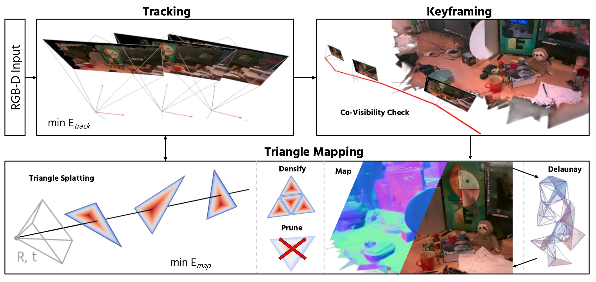

A dense RGB-D SLAM system with differentiable triangles as the 3D map representation, for on-the-fly mesh extraction.
The system uses a differentiable triangle rasteriser for tracking and mapping. Triangles are spawned from back-projected depth maps, optimised photometrically, and can be converted to a connected mesh on demand. Unlike methods that use TSDF Fusion, we can track and edit the same unified triangle representation.

System overview. Tracking estimates the pose of each incoming RGB-D frame; keyframing selects high-co-visibility frames; mapping jointly refines poses and the triangle soup; Delaunay recovers a connected mesh on demand.
Live captures from the system: photorealistic rendering, physics simulations, online mesh editing and tracking.
If you find this work useful, please consider citing:
This research is funded by the EPSRC On-Sensor Computer Vision grant (EP/Y020499/1). Website inspired by KV-Tracker.